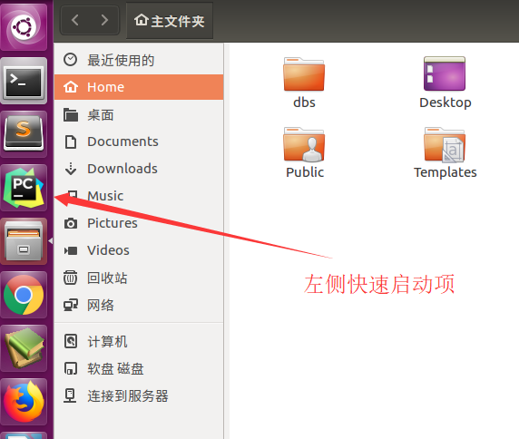
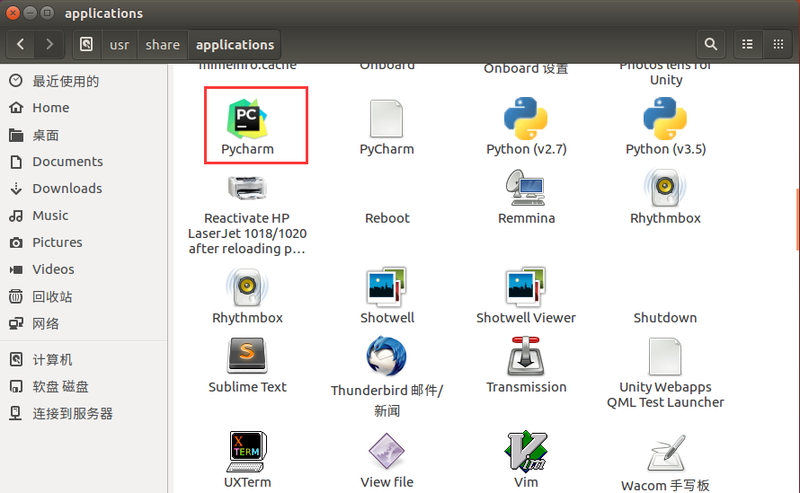
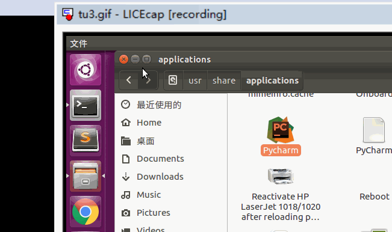

Ubuntu给软件添加快速启动项
系统说明：ubuntu版本：16.04
快速启动软件例子：pycharm
1.介绍
安装软件，每次都./xxx.sh启动，很麻烦，想要添加到左侧快速启动栏。

2.配置Pycharm.desktop
- 这里以pycharm软件快速启动项为例子，
安装完pycharm后，在/usr/share/applications目录下创建Pycharm.desktop，文件名自己指定。
sudo touch /usr/share/applications/Pycharm.desktop创建完成，vim编辑Pycharm.desktop,输入如下内容。关于vim编辑器使用请参考其他章节，保存并退出：
- Exec指向应用程序执行文件xxx.sh对应目录
Icon指向应用程序图标xxx.png对应目录
[Desktop Entry] Name=Pycharm Comment=Pycharm:The Python IDE Exec=/opt/pycharm-2017.3.2/bin/pycharm.sh Icon=/opt/pycharm-2017.3.2/bin/pycharm.png Terminal=false Type=Application Categories=Development;
3./usr/share/applications目录查看快速启动项
- 上面步骤完成，即可在/usr/share/applications目录下看到应用程序图标，双击可打开。

4.添加到快速启动项
- 拖动/usr/share/applications目录下应用程序xxx.desktop到左侧快速启动栏
